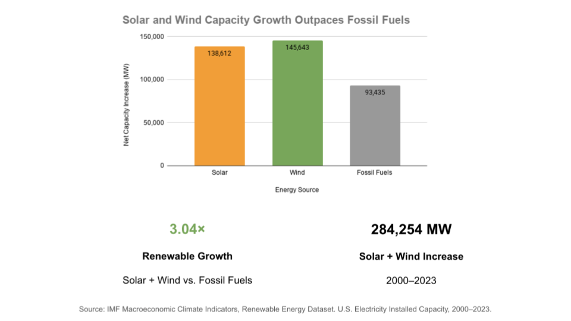
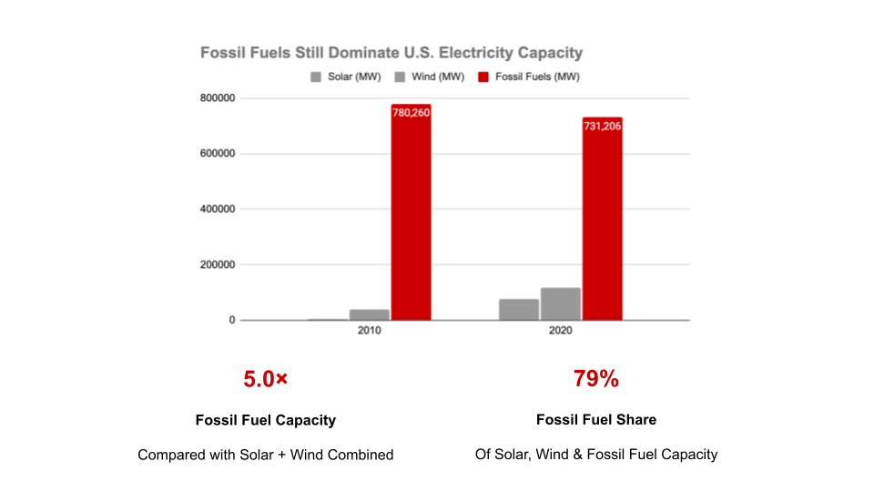

Proposition: Renewable energy is becoming dominant in U.S. electricity capacity.
FOR the Proposition

Design Decisions and Rationale:
- We compared net capacity increases from 2000 to 2023 rather than total installed capacity to emphasize the rapid expansion of solar and wind energy. This framing supports the proposition by highlighting renewable energy's growth while drawing attention away from the much larger existing fossil fuel capacity.
- We used bright orange and green bars for solar and wind, while displaying fossil fuels in gray. These color choices make renewable energy appear more visually prominent and encourage viewers to focus on its growth.
- The title "Solar and Wind Capacity Growth Outpaces Fossil Fuels" and the 3.04× annotation reinforce the impression that renewable energy is becoming dominant. Although the numerical comparisons are based on the data, using growth as evidence of overall dominance is potentially deceptive because faster growth does not necessarily mean a larger share of total installed capacity. This demonstrates how selective framing and annotations can influence interpretation without changing the underlying numbers.
AGAINST the Proposition

Design Decisions and Rationale:
- We selected installed electricity capacity data from 2010 and 2020 rather than focusing on growth between 2000 and 2023. This emphasizes the substantial difference between fossil fuel capacity and renewable capacity, supporting the argument that fossil fuels remained dominant during the selected years.
- We used bright red bars for fossil fuels and gray bars for solar and wind. The strong color contrast directs viewers' attention toward fossil fuels, while making renewable energy appear less significant. This visual hierarchy strengthens the opposing argument.
- The title "Fossil Fuels Still Dominate U.S. Electricity Capacity," together with the large red bars and the 5.0× and 79% annotations, emphasizes fossil fuels' historical dominance. However, selecting only 2010 and 2020 conceals more recent developments and reduces the visibility of renewable energy's rapid expansion. Although the chart presents accurate capacity values, its selective time frame and visual emphasis can mislead viewers into assuming that fossil fuels will continue to dominate indefinitely.
Final Reflection
This project demonstrates how the same dataset can be used to construct two opposing arguments through different visualization choices. Our supporting visualization emphasizes the rapid growth of solar and wind capacity, while our opposing visualization highlights the continued dominance of fossil fuels in total installed electricity capacity during the selected years. Both visualizations use accurate numerical data, yet they encourage different conclusions by emphasizing different aspects of the energy transition.
We learned that data visualization is not simply about presenting numbers accurately, but also about deciding which information to emphasize or exclude. In our supporting visualization, comparing capacity increases rather than total capacity creates the impression that renewable energy is becoming dominant, even though rapid growth does not necessarily imply overall dominance. In our opposing visualization, selecting earlier years and emphasizing fossil fuel capacity can make the transition toward renewable energy appear less significant than it actually is.
These techniques raise important ethical concerns because viewers may interpret visually persuasive comparisons as complete representations of reality. Even when individual data values are accurate, selective time frames, color choices, and annotations can create misleading impressions. As data scientists, we have a responsibility to consider how our design decisions influence public understanding. Effective and ethical visualizations should communicate meaningful patterns while providing sufficient context for viewers to interpret the evidence critically.